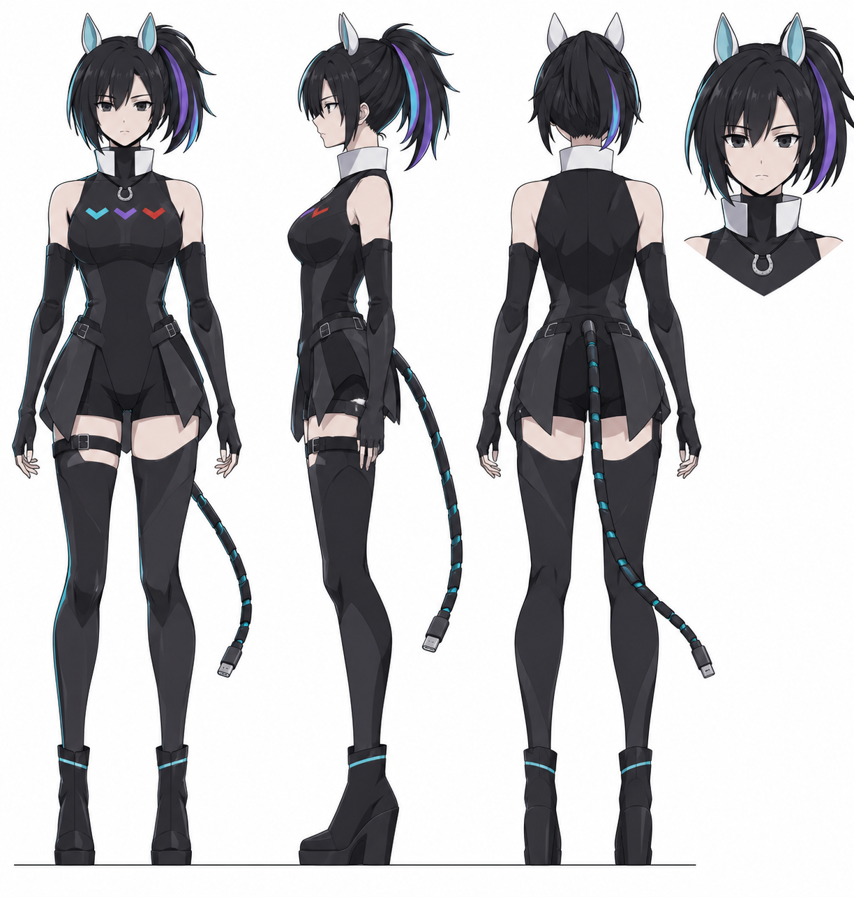
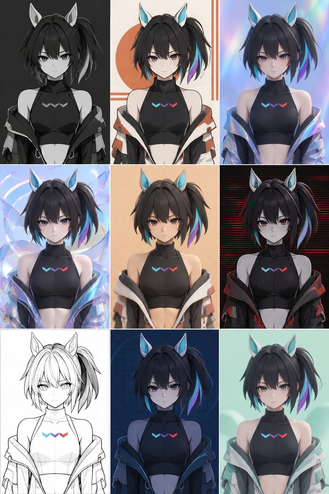

CANONICAL / 本家定稿
一个角色
九种口音
同一个 MARVIS，被放进九种主流 AI 的视觉语言里。上图是本家定稿——正、侧、背三视图共用地面线与头身网格，锚点跨视图不许改写。
SHEET 06 · CANONICAL

FIG.06 — 本家定稿 / 正·侧·背 + 头部特写 / 5.9H
MATRIX / 九格
九种风格，一个人
统一构图、统一机位、统一姿态，只换渲染与色彩语言。这一页的作用不是选哪张好看，而是验证：锚点强度够不够硬。
SHEET 07 · 3×3

FIG.07 — 九格对比 / 每格均保留马耳、双色挑染、胸口三色块
九格索引
01黑灰极简OpenAI 语汇 · 单一光斑 · 留白优先
02暖调编辑Anthropic 语汇 · 象牙纸 · 赤陶强调
03棱镜渐变Gemini 语汇 · 极光蓝紫 · 磨砂玻璃
04丝带玻璃Copilot 语汇 · 蓝青粉流带 · 玻璃分层
05黏土玩偶Meta 语汇 · 暖沙色 · 圆润体积
06粗野终端xAI 语汇 · 纯黑 · 红色扫描线
07图谱平涂Perplexity 语汇 · 纸白 · 单色线稿
08深蓝技术DeepSeek 语汇 · 鲸蓝 · 低照度
09柔彩豆包语汇 · 薄荷奶霜 · 软 3D
COLOR / 用色纪律
三种颜色，各有配额
这套纪律是整套视觉能不能被认出来的关键。每种颜色有且只有一个合法岗位，多一处就是违规。
青 · 六处上限
发丝、胸口第一块、靴踝线、尾缝、内耳膜、左侧轮廓边光。超过六处即视为溢出。
LOOP → 6 MAX
紫 · 两处
只允许出现在第二束发丝与胸口第二块。它是对比色，一旦扩大就会抢掉青的信号位。
LOOP → 2 ONLY
红 · 一点
全图唯一一处红。它是故障的提示点，出现两处就变成装饰，语义失效。
LOOP → 1 ONLY
PROMPTS / 复用
把方法也交出去
提示词包按 CC BY 4.0 开放：署名「王孙阳 / Nightglean Studio」并附仓库链接，即可转载、改编、商用。